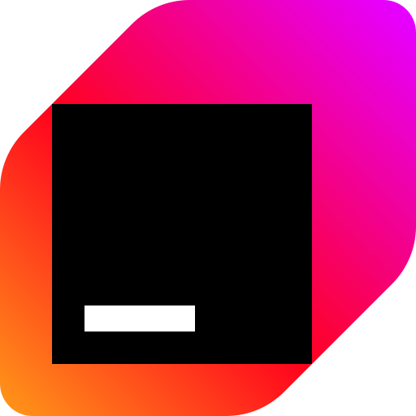
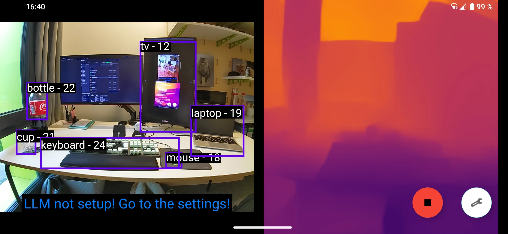
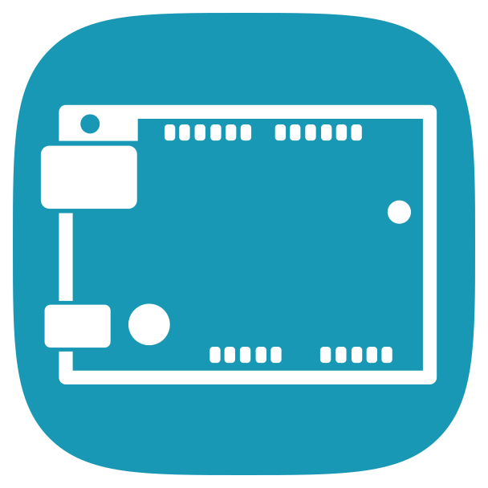

| GitHub: | github.com/Peanutt42 | |
| Codeberg: | codeberg.org/Peanutt42 | |
| Mastodon: | @peanutt42@chaos.social | |
| dotfiles: |
~/Projects/dotfiles |
|
| OS: |
|
|
| WM: | niri | |
| $EDITOR: |
|
|
| $SHELL: | fish | |
| $TERM: |
|
|
| FONT: |
 JetBrainsMonoNF |
|
$ ls ~/Projects -l
~/Projects/eye-ai
Computer vision app for blind and visually
impaired individuals, communicating via spatial
audio.
Built for BWKI competition with 3
classmates.

~/Projects/ardemu
Toy AVR CPU emulator written in Rust
(even runs in browser with wasm!)
